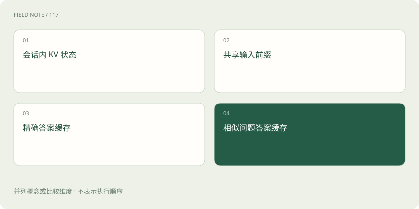

先读哪些知识
先用一个类比理解
厨房可以保留备菜状态、共用底汤、存现成套餐，或按相似订单推荐旧套餐。它们节省不同工序，也有不同的失效风险。
类比只帮助建立直觉，不等同于技术的完整机制。
一图看懂

KV 与前缀缓存保存计算状态
会话内 KV Cache 避免后续生成重复计算已有 Token 的部分状态；前缀缓存把可复用的公共输入状态留给兼容请求使用。复用通常要求模型、Token 前缀及相关配置相容。省掉输入计算不代表后续答案已经生成，也不意味着减少了所需输出长度。
答案缓存复用整个或部分结果
精确答案缓存可基于模型、输入、参数、资料版本等生成键，命中时直接返回已有结果。涉及订单状态或时间敏感数据时，还需要失效策略。只用问题文字做键，可能把不同用户、不同资料或不同语言要求下的答案错误复用。
语义缓存多了一层误匹配风险
语义缓存尝试把相近请求映射到旧答案，适合有明确容错边界的任务。“允许外借吗”和“不允许外借的例外是什么”很接近，但并不是同一个问题。应验证匹配是否保留实体、时间、否定词与权限条件，不能只调高相似度阈值就宣称安全。
缓存治理也属于业务正确性
缓存键和隔离范围要考虑租户与权限，更新文档后应能淘汰旧结果，故障时要看回源压力。统计命中率时应按缓存类型分别记录；命中次数高却频繁给错答案不是优化成功。冷缓存、热缓存与过期失效场景应分别测试。
放在一起对比
| 缓存 | 保存对象 | 主要省掉什么 | 主要风险 |
|---|---|---|---|
| 会话内 KV | 历史注意力状态 | 重复状态计算 | 显存与状态生命周期 |
| 前缀缓存 | 公共输入状态 | 重复 Prefill | 命中兼容性与隔离 |
| 精确答案缓存 | 旧响应 | 新推理调用 | 过期和缓存键遗漏 |
| 语义答案缓存 | 相似请求响应 | 新推理调用 | 语义误匹配 |
放进真实场景
SCENARIO
两位用户都问“我的额度还剩多少”。若缓存键没有用户身份，就可能把甲的额度返回给乙。问题字面完全相同也不能复用个人结果。
别踩这个误区
缓存感知路由常关注状态的位置，语义答案缓存关注请求的相似性，它们不是同一个功能。
想一想
前缀缓存命中后，能直接拿上次的完整答案给用户吗？
不能据此推出。前缀缓存复用输入状态，后续输出仍需要生成；答案复用是另一种机制。
关联阅读
资料与边界
本文为原创知识讲解。类比和图示经过简化；示例数字不代表实测或报价。整理日期：2026-11-04。文末列出对应技术的原始资料，具体功能与版本支持请以原文为准。